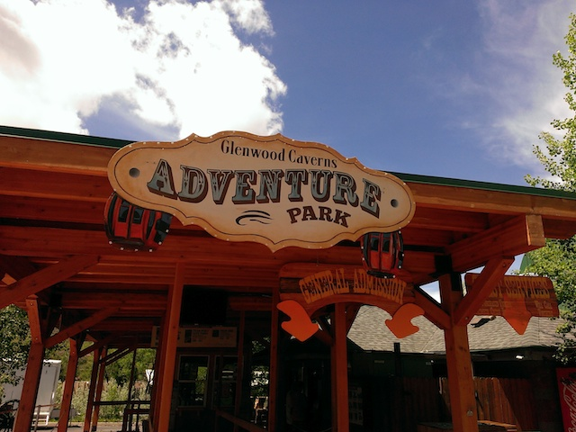
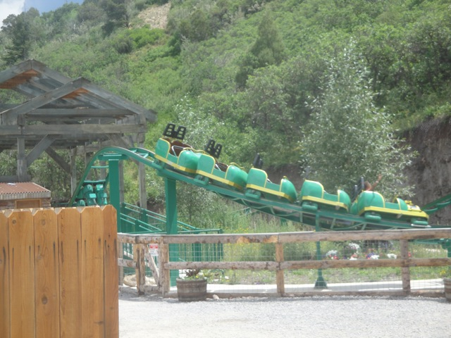
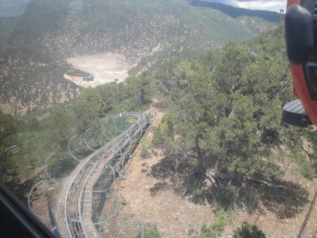

| |
Glenwood Caverns Adventure Park Review

Glenwood Caverns Adventure Park is a fun little quirky park that people rarely talk about. But once you visit the park, you realize that this is actually a fun little park. Now this is a park that you can't really see. No really. You'll sometimes see some signs. But where the hell is the park? Look up. You see that mountain in the background? It's on top of that. And you have to take a cable car to reach this park. Now that is something that's really...interesting. And when you get up to the top of the mountain and am a part of the park, it's very...interesting. There's really no other parks like it. The only thing that even comes remotely close is Tibidabo in Barcelona, Spain. But yeah. There's not even that many rides. Yeah, there's some. But honestly, this park is more about being on top of a mountain, exploring caves, and all of the rides that they do have, they incorporate the mountain into it, or at least will dangle you over the edge of that mountain and make you scared if you are afraid of heights. So that definetly makes it something intersting and a lot of those rides, which would normally be fairly dull and unintersinting otherwise, are now just a ton of fun. It's a place you might just think of as an expensive credit whoring stop, but if that's the way you think about it, you don't get this park since this park is not about credits, but about nature, caves, and cool rides on top of a mountain.
Rollercoasters
There is a link to a review of all the Rollercoasters at Glenwood Caverns Adventure Park.
Please keep in mind that there is no review of Cliff Hanger because it was closed BOTH times I visited this park. >=(
Kiddy Coasters
Wild West Express Review

Flat Rides
Here are the reviews of all the Flat Rides at Glenwood Caverns Adventure Park. All right. Now Glenwood Caverns Adventure Park doesn't have that many flat rides since let's face it. There aren't that many rides at Glenwood Caverns Adventure Park at all. But the flat rides that it does have, they most certainly are placed to give an experience that is unlike so many parks. For instance, the one flat ride of theirs that I rode is their Screamin Swing. Now this shouldn't be that big a deal. However, there's just one little thing about their Screaming Swing. Yeah, they're fun enough normally. But this one is located on top of a freaking mountain. And sitting on the right side, you soar up, looking down on the ground from 1000 ft in the air. HOLY F*CK!!! It's just insane. So yeah. It has that same skyscraper effect as all of the rides on the Stratosphere. Except this Screaming Swing is much better than all the Stratosphere rides, both because of the view, and Screamin Swings just are that much better rides. If this thing runs in the rain, it totally becomes one of the best flat rides ever. I just love this thing. They also have some chairswings over the side of the mountain. I didn't bother riding them both times I went. Not sure if it was closed both times, I just know that I skipped them, and I'll probably ride them simply because it's over a mountain and has the Stratosphere effect.
 Best Screaming Swing Ever!!! =)
Best Screaming Swing Ever!!! =)
Water Rides
There are no water rides at the Glenwood Caverns Adventure Park.
Dining
I didn't eat at the Glenwood Caverns Adventure Park. I can't imagine that the food here is anything special. It almost doesn't even seem like the park where you'd need food at.
Theming and Other Attractions
Here are the reviews of all the other stuff at the Glenwood Caverns Adventure Park. As for theming, there's pretty much none. But just take a look at where this park is. This park is literally on top of a mountain. You have to take a cable car to get up to the top. And then the veiw and setting for the park, just phenomenal. We're for sure putting the park on our Top 10 Theme Park Settings List. First off, we have to talk about their star attraction. Yeah. We haven't even discussed that. This place has an Alpine Coaster. Hell, when I first decided to go to the park, I didn't even think the park had credits. I just remembered some place had an Alpine Coaster and thought it'd be fun to ride that, so I was very pleased to discover that the place was actually a quirky little theme park with some rides. And as for the Alpine Coaster itself, well it's a lot of fun, because let's be honest. All the Alpine Coasters are. But I'd honestly say that this one is my least favorite of the 4 that I've ridden. I know that sounds damning, but please don't dismiss this ride, because it still is a very fun ride. I mean, it goes down the freaking mountain. I just prefer the other ones more. They're all a lot of fun. And considering how this ride is included in the general admission, definetly make sure to take multiple rides on it. And considering how Glenwood Caverns Adventure Park is not about the rides, there's a lot more. They also have a zipline that goes down the mountain. Sadly, not all the way down the mountain, but a good 100ish feet. Which is still a lot of fun. Always fun to head on down, gain some speed, and a great view while you're at it. And finally, there's the one thing that the Glenwood Caverns Adventure Park is known for. It's not the credits. It's not the Screaming Swing. It's not the Alpine Coaster. It's not even the great view from the top of the mountain. It's all the caves that you can do while at the park. You really learn a lot on those cave tours, and they're just a ton of fun. I only wish I got some photos of those caves. And yeah. It's not just one cave. There's many different caves, and you go deep into them, there's a lot of tight spaces, a lot of darkness, and big sense of adventure. Definetly make sure and check them out when visiting the park.

Love these Alpine Coasters.
In Conclusion
Glenwood Caverns Adventure Park is definetly one of the most unique and intersting parks that I have ever visited. It's not even really an amusement park. It's this...weird sort of cave park on the top of a mountain, with a small selection of rides that all have the common theme of incorporating the mountain as well as placing them over the edge so you're looking down 1000 ft on the ground. It's very...odd. But you know what, it's just a really fun park. You don't really go to the park to go have a thrilling adventure and ride some of the best rides ever. But this is the park where you mainly go to check out the caves, and then can ride a couple of good rides, a really fun Alpine Coaster, the best Screaming Swing, and other rides. Hopefully you'll even get some stupid credits (as long as they're not F*CKING CLOSED!!!). Yeah. It's a bit expensive for how few rides there are up here. But considering just how much fun stuff is up here, do not glance over this place. Buy that ticket and take that cable car on up. You'll be pleasantly surprised with the park.
Enthusiast FAQs.
*Are there kiddy coaster restrictions? - No. Wild West Express has no restrictions for adults.

Tips
*Go crazy on the Alpine Coaster.
*Don't treat the Glenwood Caverns Adventure Park as a credit whoring stop.
*Do at least one of the cave tours.
*Don't forget about the Screaming Swing. And try to look down to the ground on the ride.
*If that stupid credit is open, get it before it closes.
*Have Fun!!!!
Theme Park Category:
Small Park
Location
Glenwood Springs, Colorado, U.S.A
Last Day Visited
May 26, 2015
Video
I don't have enough footage to shoot a Glenwood Caverns Adventure Park Video. If I gain enough, it'd just be a tiny little video.
Complete Update List
2015
Utah/Colorado Road Trip
2013
Texas/Rocky Mtn Road Trip
Here's a link to the parks website.
Home
|